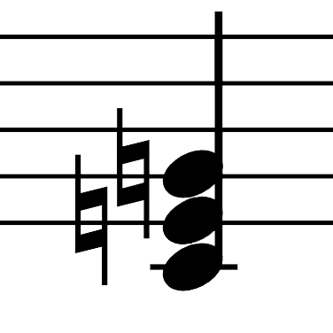
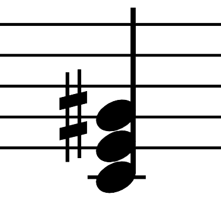
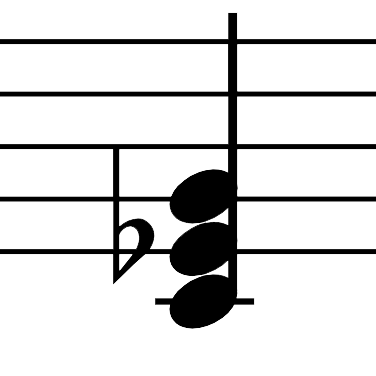
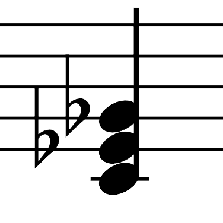

Home
Scales
Intervals
Chords
Chords: Triads
A triad is a chord of three pitches, in which each of the notes are spaced a Major or a minor third apart. There are four triad qualities:

Major
M3 + m3

Aug
M3 + M3

minor
m3 + M3

dim
m3 + m3